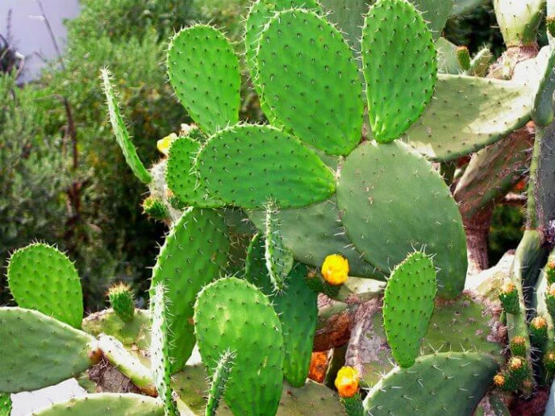

NOPAL

Pertenece a la familia de los cactus y
ha sido un símbolo nacional durante siglos,
ya que en él se postra el águila devorando
una serpiente del escudo de México.
En nuestro país hay ocho especies endémicas.
Ir al Menu